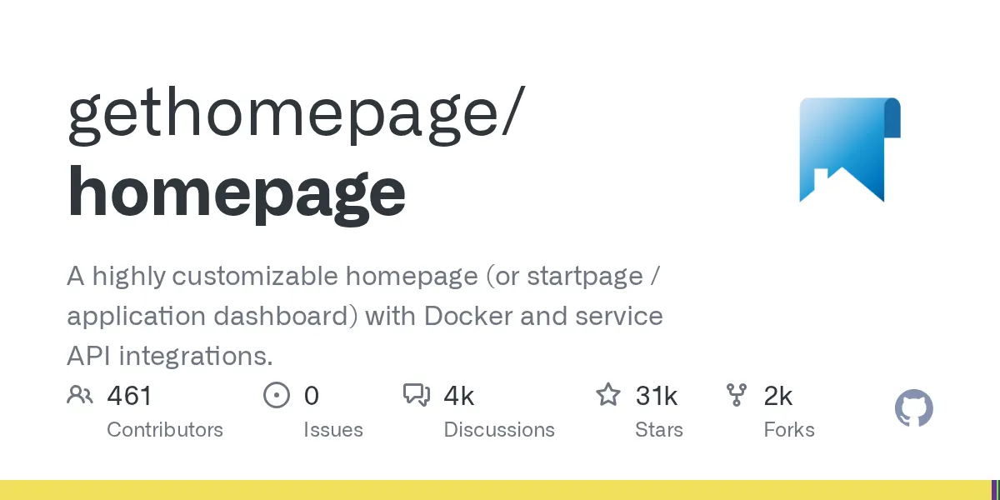
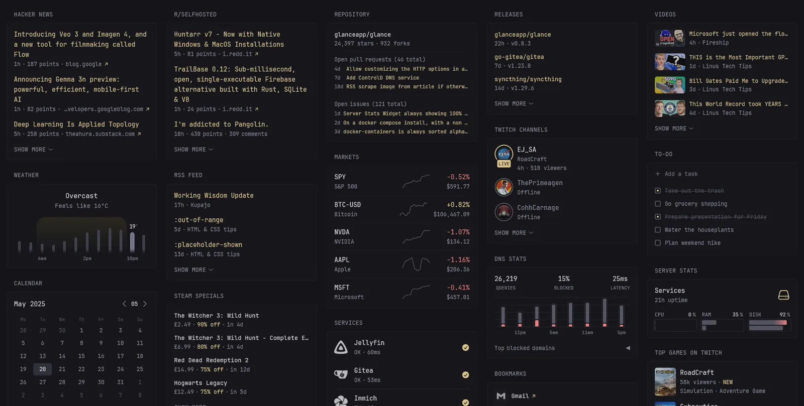

| Project | (1) Health | (2) GitOps | (3) Integrations | (4) Footprint | (5) Auth/Proxy | (6) UX/Maint | (7) License | Σ |
|---|---|---|---|---|---|---|---|---|
| Homepage ⭐ 31k | 4 | 5 | 5 | 4 | 4 | 4 | 5 | 31 |
| Glance ⭐ 35k | 5 | 5 | 2 | 5 | 3 | 4 | 4 | 28 |
| Dashy ⭐ 25k | 4 | 4 | 3 | 3 | 4 | 5 | 5 | 28 |
| Homarr ⭐ 4k | 4 | 2DB | 3 | 2 | 5 | 5 | 5 | 26 |
| Homer ⭐ 11k | 3 | 5 | 1 | 5 | 3 | 3 | 5 | 25 |
| Organizr ⭐ 5.8k | 2 | 1DB | 3 | 3 | 4 | 4 | 5 | 22 |
| Flame ⭐ 6.4k | 2 | 2 | 1 | 5 | 2 | 3 | 5 | 20 |
| Heimdall ⭐ 9.2k | 1 | 1DB | 2 | 3 | 2 | 3 | 4 | 16 |
DB = uses a database for config storage — disqualifier for a pure-YAML gitops homelab. Dashy and Homarr both score 28/26 but on opposite strengths (UX/auth vs integrations/footprint).
git pull --ff-only && docker compose up -d

:latest in production. Test upgrades before pulling.